- ホーム
- 予防歯科（定期健診・治療中断のリスク）
吉川歯科医院の予防処置
大阪四ツ橋駅から徒歩2分の吉川歯科医院では虫歯や歯周病は、悪くなったら治療するのではなく、まず悪くなる前に予防することが大切だと考えております。そこで、当院では予防処置のために多くのメニューを取り揃えております。
また、せっかく治療を始めても途中で通わなくなってしまうと症状が進行するリスクがあります。他院様で治療を中断してしまってるも場合も、遠慮なく当院へご相談ください。
予防歯科とは
予防歯科では、歯のクリーニングや虫歯・歯周病の検査を定期的におこなうことで歯科疾患を予防します。
予防歯科を定期的に受診して予防処置を受けていれば、虫歯や歯周病など歯科疾患を発症しても早い段階で発見でき、早く治療をおこなうことが可能になります。初期段階で治療をすれば、治癒効果が高まるだけでなく患者様の感じる痛みも少なくできます。
予防歯科の重要性
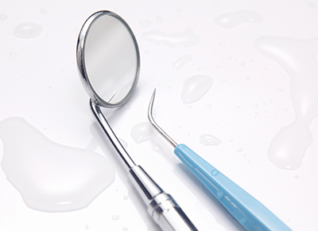
従来であれば虫歯ができてしまったから歯科医院へ通うというのが通例でした。しかし、これからは自然に生えた健康的な自分の歯を維持する時代です。
たとえば、虫歯にかかってから治療をした歯はもろくなってしまい、結果的に虫歯を再発するリスクが高くなります。そうならないためにも、歯が虫歯になってから治療するのではなく虫歯にならないことが重要です。当院では、予防処置を継続しておこなうことで虫歯や歯周病を発症させないだけでなく早期治療も実現しております。
予防歯科の治療メニュー
※表は左右にスクロールして確認することができます。
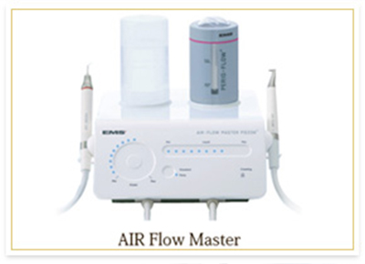 |
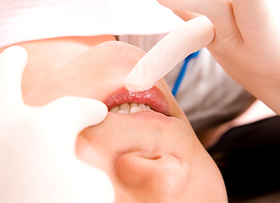 |
エアフロー |
GUMマッサージ |
|---|---|
| 歯の表面や歯周ポケット内に、空気と水・グリシン（アミノ酸）を吹き付け、短時間で清掃する方法です。被せ物やインプラントも傷つけることなくクリーニングできます。 | GUMマッサージとは、指を使ってていねいに歯ぐきをマッサージすることです。唾液分泌を促進させて、虫歯予防効果を高めます。 |
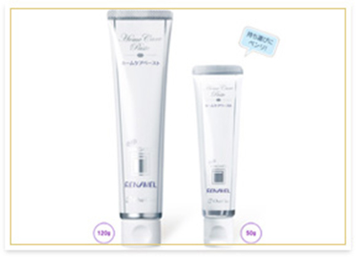 |
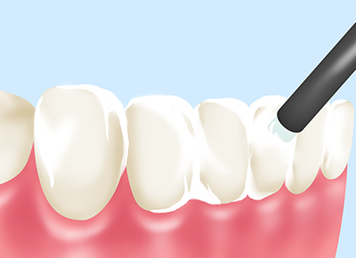 |
リエナメル |
フッ素塗布 |
| 歯の表面にあるエナメル質を滑らかにして、汚れを付着しにくくします。これにより、虫歯予防だけでなく歯の表面にコーティングを施してエナメル質のダメージを補修する働きがあります。 | フッ素を歯の表面に塗布します。フッ素は歯質を強くして、虫歯予防効果を高めます。また、フッ素塗布は初期虫歯にも効果的です。 |
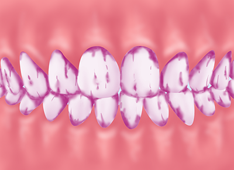 |
|
定期検診 |
歯垢の染め出し |
| 虫歯や歯周病を予防するためには、定期的に歯科医院で検診を受ける必要があります。お口の病気は気づかないうちに進行するからこそ、こまめに検診を受けましょう。 | 染め出しとは、お口の汚れに反応する薬剤を使用して、ブラッシングの磨き残しを調べる方法です。患者様にもご自分の磨き残し部位を確認していただき、毎日のブラッシングケアに役立てていただきます。 |
-
ブラッシング指導
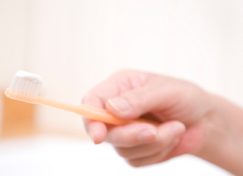
虫歯や歯周病を予防するためには正しいブラッシングが欠かせません。患者様の歯並びや
お口の状況などを踏まえて、専門的な視点から正しいブラッシング方法を指導しております。 -
3DS
抗菌剤を入れた特殊なマウスピースを患者様が歯に装着しておこなう予防処置です。虫歯や歯周病は細菌感染症なので、抗生物質の働きで原因細菌を除菌します。口腔内の除菌に特に効果があります。
PMTC
PMTC（Professional Mechanical Tooth Cleaning）とは、歯科医師や歯科衛生士による専門的なクリーニングを指します。ブラッシングで落とせなかった歯の汚れを、特殊な器具を使用してきれいにしております。
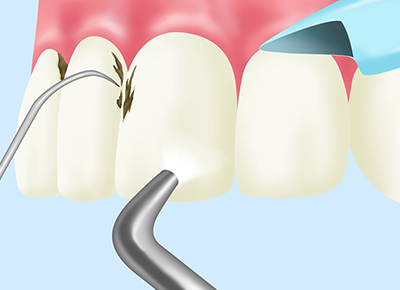
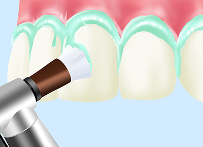
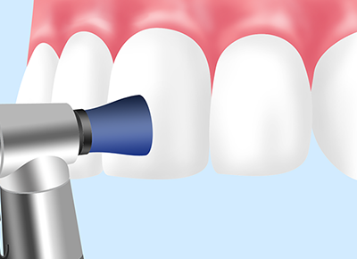
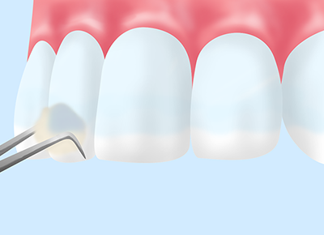
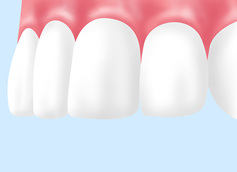
- 1日あたり5回以上
ブラッシングを
すること - 専用の歯ブラシは
24時間
乾燥させること - 専用歯ブラシは
必ず用途に合った
使い方をすること - 歯磨き
粉は
使わないこと - 専用歯ブラシは
1ヶ月で
交換すること
治療中断は危険です
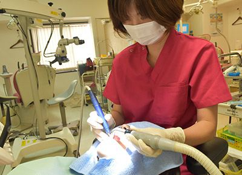
患者様のなかには、予約日時を間違えてしまったり忙しくて通えなかったりして一度キャンセルした後、気まずいと感じてしまい治療を中断してしまう方が少なくありません。しかし、治療を自己判断で中断してしまうとさまざまなトラブルが起こるリスクがあります。
たとえば、虫歯や歯周病など治療中の疾患があれば、ますます進行してしまいます。また、歯が抜けた状態を放置していると、周りの歯並びが崩れてしまう恐れもあります。このように治療を中断してしまっても良いことはありません。一度、治療を中断してしまって放置している歯があったら、遠慮なく、そして早めに当院へご相談ください。
予防歯科の料金表
| エアフローペリオ | ¥5,000 |
|---|---|
| エアフローソフト | ¥3,000 |
| ガムマッサージ | ¥500 |
| リエナメル | ¥2,000 |
| 3DS | ¥10,000 |
※表記価格は税別価格になります。